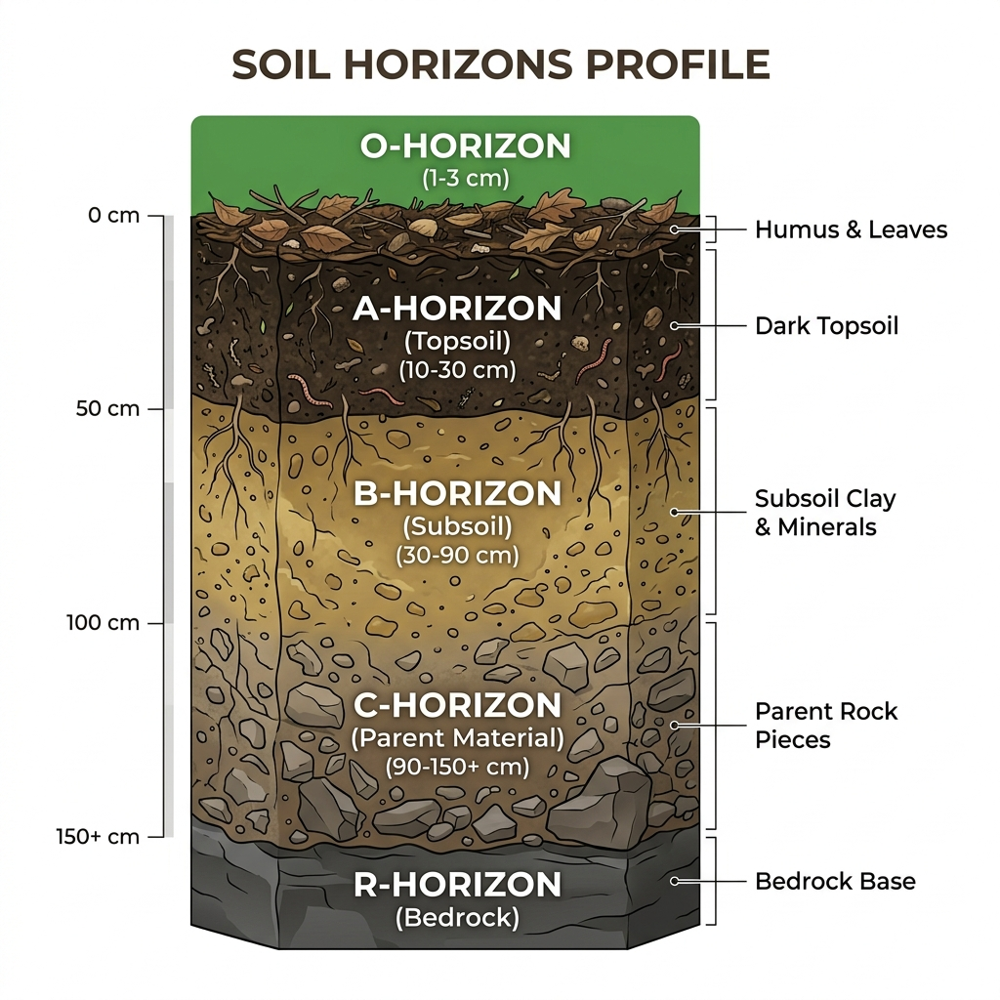

Cultivate the Future, Naturally
Protect bio-diversity, regenerate soil organic carbon, and raise clean harvests using advanced permaculture layouts and sustainable crop rotations.
Bio-Dynamic Principles
We work alongside natural ecosystems to restore soil structure and cultivate high-nutritional-value food supplies.
Permaculture Design
Designing physical zones that mimic natural patterns, balancing water retention and wind breaks organically.
Soil Regeneration
Cover crops and natural green manure restore humus levels and fix gaseous nitrogen back into soil aggregates.
Zero-Chemical Policy
Deploying biological pest controls and crop rotation strategies instead of synthetic herbicides or mineral salts.
Soil Stratum Analysis
Select any soil layer on the right to examine its physical structure, pH level, and bio-retention details.

Topsoil & Humus (O-Horizon)
Highly organic, loose material containing decomposed leaves, organic waste, and critical living microorganisms. Packed with rich nutrients that feed agriculture plants.
O-Horizon (Humus)
0" - 10"A & B-Horizon (Subsoil)
10" - 30"C-Horizon (Substratum)
30" - 72"R-Horizon (Bedrock)
72"+Bio-Diverse Crop Rotations
Explore our organic crop rotation schedules designed to naturally break disease vectors and restore soil nutrients.
Clover, Alfalfa, and Legumes bind atmospheric nitrogen and release it into the subsoil through root nodules.
Months 1-4Sorghum, Mustard, and Rye accumulate dense root mass, increasing soil organic carbon when mulched.
Months 5-8High-demand grains (Spelt, Wheat) or vegetables take advantage of the rich, naturally fertilized soil matrix.
Months 9-12Tillage radishes drill deep holes to aerate compacted soils while preparing ground for the next cycle.
Winter CoverPermaculture Community Voices
Bio-dynamic farmers sharing their results using closed-loop organic methods.
"By switching to zero-chemical pest controls, our ecosystem self-regulated within 18 months. Natural predatory insects now manage aphids perfectly."
Evelyn Thorne Director, Oasis Permaculture"The interactive soil stratum guidelines taught our team exactly how to manage humus thickness. Our organic carbon score increased by 2.1 points."
Liam Fitzgerald Head Farmer, Clover Hill Farm"Closed-loop bio-dynamic schedules allowed us to receive full USDA Organic and GlobalG.A.P. accreditation, boosting crop margins by 45%."
Dr. Akira Sato Principal Researcher, Sato Ecological SystemsRequest Organic Farm Audits
Subscribe to get monthly newsletters regarding USDA Organic standards updates, composting recipes, and biological pest alert bulletins.